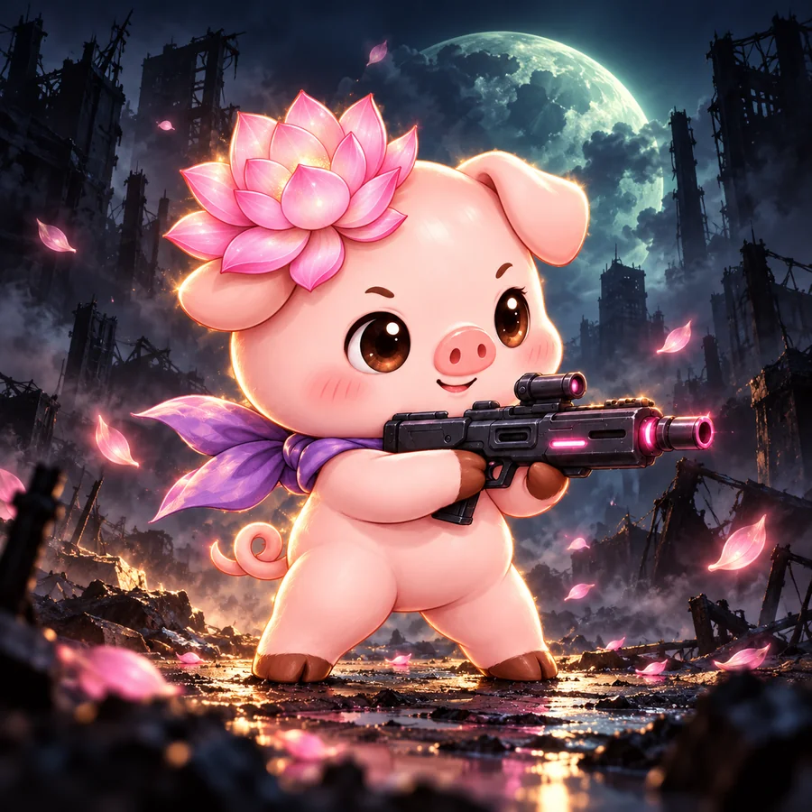
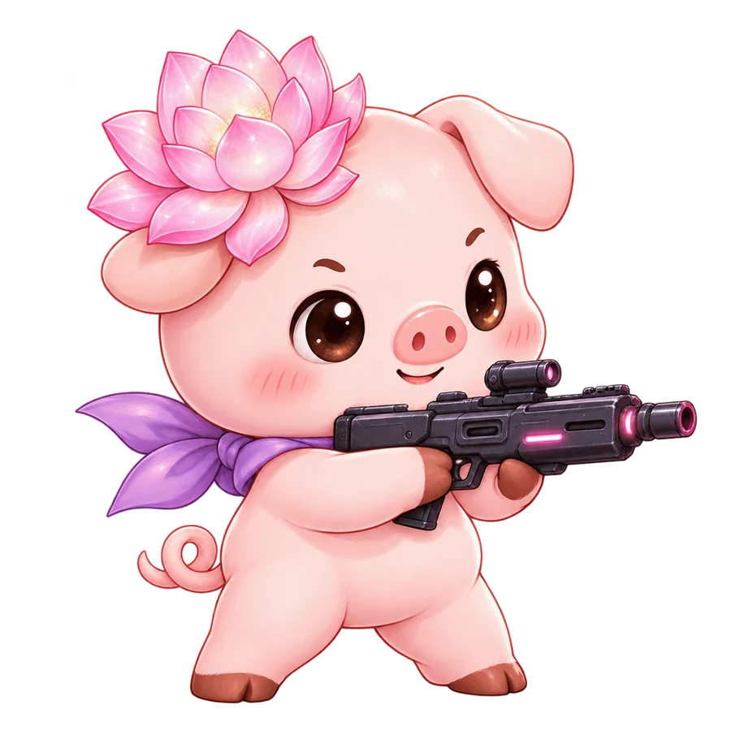
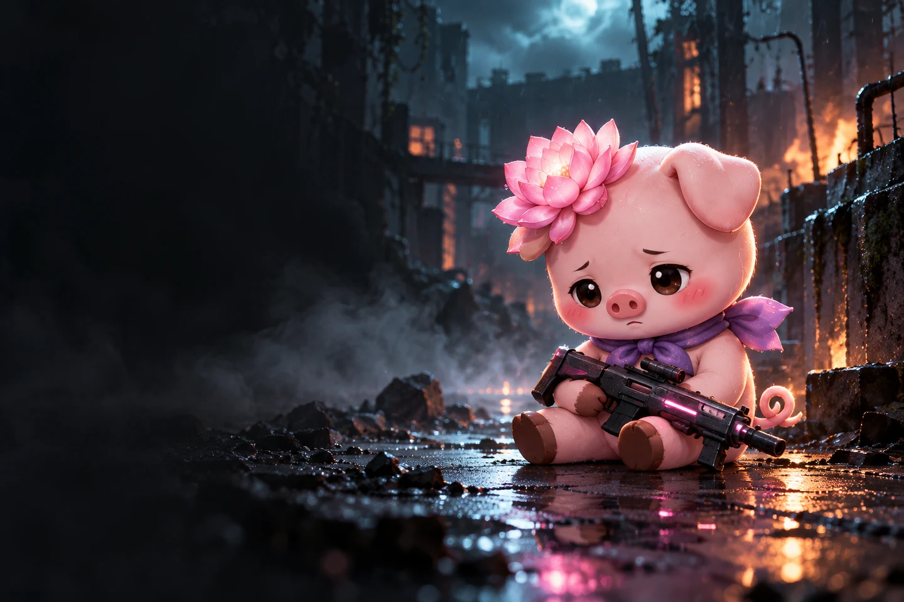

꽃돼지
청토끼 슬레이어!
청토끼 슬레이어!
BLOOM IN THE DARK
꽃돼지 청토끼 슬레이어!
꽃돼지의 장비와 감염 구역을 불러오고 있어요.
SURVIVAL NOTE / 01적에게 둘러싸이지 않도록 움직이세요. 조준과 사격은 자동입니다.
FIELD UNIT / YEONISURVIVOR
YEONI / 01
YEONI / 01

YEONI 생존자 기록 / 작전 준비 완료
SERVICE RECORD
칭호 · 전투 기록
어떤 테크로 얼마나 멀리 갔는지 테크별로 기록됩니다. 칭호 하나를 장착하면 이름 옆에 표시됩니다. (칭호는 외형 보상이며 전투 능력치는 바뀌지 않습니다)
업적 칭호
INFECTED ARCHIVE
보스 위협 기록
구역마다 다른 보스를 상대하세요. 공격 예고를 확인하고 안전한 틈으로 이동하세요.
처치한 일반 개체는 3코인, 엘리트는 24코인을 떨어뜨립니다. 가까이 가서 회수하세요.
꽃돼지 Lv.1
0:00
✥ 드래그 / WASD로 이동 적을 탭해 집중 조준 · 다시 탭해 해제
LOADOUT · 출격 준비
시작 테크 선택
시작 무기와 짝 보조 장비가 주어집니다. 모든 테크는 계열 무기 2개를 들고 시작합니다. 같은 계열 장비를 2·4·6개 모으면 공명 보너스가 단계별로 열리고, 다른 계열 무기는 테크 보너스를 받지 못합니다.
난이도
플레이 인원
생존 장비 선택 LV 2
하나를 선택해 전력을 보강하세요. 전투는 잠시 멈춥니다.
EQUIPMENT WORKBENCH
아이템 조합
이번 작전에서 아이템 레벨을 올려 두 장점을 합치세요. 조합하면 재료 2개를 소모하고 새 아이템 Lv.1 하나를 얻습니다. 장비는 다음 구역 시작 때 저장됩니다.
회수 물자
TACTICAL PAUSE
전술 점검
전투 일시정지. 장비 조합과 다음 생존 전략을 확인하세요.
설정
고어 수위
그래픽 품질
장비 보급소 ● 0
FLOWERPIG ATELIER
꽃돼지의 의상실
연꽃을 두르고, 나만의 꽃돼지로.
구매 전에 자유롭게 입어보세요. 망토는 이동·수집을, 예복은 방어를 돕습니다. 장식은 외형만 바뀝니다.
LIVE FITTINGYEONI / 01
현재 장착 모습
꽃돼지 · 나의 장비
연꽃 컬렉션 의상 1개 + 장식 1개
입어보기는 저장·구매·장착되지 않습니다. 구매하면 영구 보유되며 해당 슬롯에 바로 장착됩니다. 보유한 외형은 무료로 다시 장착할 수 있습니다. 의상 2종은 함께 장착할 수 없고, 장식은 의상과 함께 사용할 수 있습니다.
CELESTIAL RELICS
날개 유물 · 더 빠른 생존
가장 높은 등급 하나의 효과만 적용됩니다. 원하는 유물은 확정 구매할 수 있어요.
YEONGNYANG'S ARMORY
고급 장신구
한 번에 1개 장착 · 구매하면 자동 장착 · 다음 작전부터 적용됩니다. 다른 장신구와 효과가 중첩되지 않습니다.
EARNED COINS ONLY
별빛 보급 상자
플레이로 모은 코인으로 유물 1개를 얻습니다.
현금 구매·환전은 없습니다. 확정 구매로도 같은 유물을 얻을 수 있어요.

MISSION REPORT
작전 종료
STAGE 1 CLEAR
감염 지대 정화 완료
앱 설치
꽃돼지 청토끼 슬레이어!